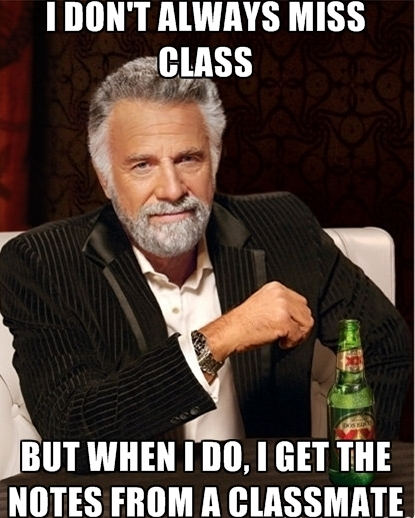

|
Note:
This syllabus, the assignments, and other
aspects of the course are all subject to
revision as we go, as needed.
|
Your host: Jeremy Anderson
E-mail: jeremyanderson@depauw.edu
Web: http://jeremyanderson.net
Phone: On campus, ext. 4679. From off campus, 765-658-4679. Messages will forward to my email.
Office: My virtual office is here on Google Meet. (I will rarely be in my physical office, Asbury 209.)
Office hours: My office hours are MWF 10:30 - 11:30AM; other times by appointment. I can likely meet with you MWF after 2:45PM. (Times are Eastern Standard Time (UTC-5:00) until March 14, when we switch to Eastern Daylight Time (UTC-4:00).)
Web: http://jeremyanderson.net
Phone: On campus, ext. 4679. From off campus, 765-658-4679. Messages will forward to my email.
Office: My virtual office is here on Google Meet. (I will rarely be in my physical office, Asbury 209.)
Office hours: My office hours are MWF 10:30 - 11:30AM; other times by appointment. I can likely meet with you MWF after 2:45PM. (Times are Eastern Standard Time (UTC-5:00) until March 14, when we switch to Eastern Daylight Time (UTC-4:00).)
Course description & goals
Government presents itself to us as the
administrator of (worldly) justice, but may also act
unjustly. It may appear to us as our nurturer and
protector, but also as a demanding power which compels
us to cooperate by threatening us with the loss of our
property, freedom, or lives. The main point of this
course is to examine how far government's actions can be
justified, with special attention to the social contract
tradition. We will examine justifications of state power
from authors such as Plato, Hobbes, Locke, and Rawls,
and challenges to governmental authority from authors
such as Jefferson, Thoreau, Spencer, Marx, Malcolm X,
and King.
By the end you should:
By the end you should:
- Gain a critical understanding of several important justifications of government and important challenges to authority;
- Enhance your knowledge of important terms and sharpen your ability to identify and evaluate philosophical arguments;
- Critically reflect on your own relationship with government;
- Appreciate the complexity of the issues, but nevertheless be able to take a reasoned stand on them;
- Further develop your skills at research, writing, and speaking;
- Demonstrate the above in graded assignments and classroom participation.
Texts
Many of our readings are collected in Michael
L. Morgan, ed., Classics
of Moral and Political Theory, 5th edition. The
book is available in hard copy and e-versions from Eli's
Books, or you can get an e-version via the
publisher's website. Other readings will be posted
online.
Assignments & grading
1.
Writing requirements.
a. Papers. You will write three short
papers (1200-1700 words). There will also be a
substantial research paper (3000-4000 words), which
can count towards Writing
In the Major). Details of these assignments are
posted on the Papers web page.
b. Reading Responses. To prepare for class, at least once each week write a reading response and post it to the appropriate forum on Moodle by the night before we discuss that reading. Instructions for these are posted in the Reading Response forums on Moodle.
b. Reading Responses. To prepare for class, at least once each week write a reading response and post it to the appropriate forum on Moodle by the night before we discuss that reading. Instructions for these are posted in the Reading Response forums on Moodle.
2. “S” requirements
This is an “S” course. You will engage in each of the following speaking/listening activities. More detailed instructions are on the "S" Work page:
A.
Discussion instigation. We will take turns
instigating discussion. During a given class meeting
you will do your best to instigate a stimulating and
productive discussion of the assigned reading for that
day by giving a brief (5-10 minute) talk about some
aspect of the reading at the start of class. (Hint: if
you wish to develop this presentation into one of your
short papers, that’s fine.) Full instructions are here.
B. Informal paper topic explanation. You will give a brief (roughly 5 minute) presentation in which you explain the topic of your research paper and the main issue(s), question(s), puzzle(s), etc. that you plan to discuss in it. Your presentation should be pitched as if to an audience of non-philosophers who are skeptical about the worth of doing philosophy. Accordingly, you should not only explain your topic in a clear and accessible way, but you should also say something about why your topic is worth thinking about in the first place. After your presentation, you will field questions from your classmates and professor for ten minutes or so. April 14th and 16th are set aside for these presentations. You will need to have selected and started thinking about your paper topic by this time, so you should start thinking about your research paper topic early. Full instructions are here.
C. Formal paper presentation. Near semester’s end you will give a 15-20 minute talk in which you explain and defend the central thesis of your research paper. You may not read from your paper. Following your talk, a classmate will give a brief (roughly 5 minute) response to your talk. This will be followed by a brief question-and-answer period with the whole class. You must provide your commentator and professor with a complete draft of your research paper no later than one week prior to your presentation. Full instructions are here.
D. Paper comments. You will also serve as a commentator for a research paper presented by one of your classmates. You will give a brief (about 5 minute) talk in which you offer some critical comments on the paper in question. Your comments will immediately follow your classmate’s formal paper presentation. You must submit a copy of your comments via Moodle or email by 6pm the night before you comment. Full instructions are here.
E. Participation during class discussion and question and answer periods. I expect you to contribute a lot to class discussion, to listen to what your classmates have to say, and ask thoughtful questions during the various question and answer periods.
B. Informal paper topic explanation. You will give a brief (roughly 5 minute) presentation in which you explain the topic of your research paper and the main issue(s), question(s), puzzle(s), etc. that you plan to discuss in it. Your presentation should be pitched as if to an audience of non-philosophers who are skeptical about the worth of doing philosophy. Accordingly, you should not only explain your topic in a clear and accessible way, but you should also say something about why your topic is worth thinking about in the first place. After your presentation, you will field questions from your classmates and professor for ten minutes or so. April 14th and 16th are set aside for these presentations. You will need to have selected and started thinking about your paper topic by this time, so you should start thinking about your research paper topic early. Full instructions are here.
C. Formal paper presentation. Near semester’s end you will give a 15-20 minute talk in which you explain and defend the central thesis of your research paper. You may not read from your paper. Following your talk, a classmate will give a brief (roughly 5 minute) response to your talk. This will be followed by a brief question-and-answer period with the whole class. You must provide your commentator and professor with a complete draft of your research paper no later than one week prior to your presentation. Full instructions are here.
D. Paper comments. You will also serve as a commentator for a research paper presented by one of your classmates. You will give a brief (about 5 minute) talk in which you offer some critical comments on the paper in question. Your comments will immediately follow your classmate’s formal paper presentation. You must submit a copy of your comments via Moodle or email by 6pm the night before you comment. Full instructions are here.
E. Participation during class discussion and question and answer periods. I expect you to contribute a lot to class discussion, to listen to what your classmates have to say, and ask thoughtful questions during the various question and answer periods.
To earn the “S” for this course you must perform each of these five speaking/listening activities passably. Earning a passing grade in the course does not guarantee that you will receive your “S,” nor does earning the “S” guarantee you will pass the course.
Don’t forget the Writing and
| Assignment |
Weight |
Needed for
"S" |
| 3 short papers @ 10% each: | 30% of course grade | |
| Research paper: | 20% | |
| Reading responses: | 10% | |
| Discussion instigation: | 5% | Yes |
| Informal paper topic explanation: | 5% | Yes |
| Formal paper presentation: | 15% | Yes |
| Paper comments: | 10% | Yes |
| Contribution to discussion: | 5% | Yes |
A tentative list of assignments is posted to the class web site. But details and timing are subject to change. Exact dates for assignments and deadlines will be announced in class.
Course Policies
If any of these policies
might be a problem for you, please let me know and
let's discuss it.
Privacy policies. For safety during the pandemic this class will be taught remotely. To enable class interaction it will be taught synchronously if possible, meeting via video conference during the hours in the schedule of classes. This means we will be virtually visiting people's living spaces. So, out of respect for classmates, me, and those you live with:
Minimize distractions in class. Please set your cell phone, smart watch, PDA, pager, etc. to vibrate only, and put them aside during class. Find a quiet place to be during class if you can--or if you can't, please mute your microphone when you're not speaking. In other words, be here both physically and mentally as much as possible and help others do the same.
Late policy. Make-up exams will not be allowed nor late papers accepted for full credit except in cases where there is a compelling excuse such as a serious medical problem, University-recognized event, religious obligation, etc. (See Attendance policy, above.) Notify me in advance by phone (765-658-4679), e-mail, or in person, if you can. I may require documentation.
Academic integrity. We learn from others. So I expect words and ideas from other people (readings, classmates, me, research you do, etc.) to show up in your work. But we must acknowledge everyone who helped us. So, whenever others' words or ideas appear in your work, you must cite them whether you quote them or not.
I take academic integrity very seriously and I expect you to. Often, cheating is unintended, but even then it is a serious offense and I may charge you with misconduct. The minimum penalty is usually worse than turning in no work at all, and penalties can include failing the course, suspension, or expulsion. Much plagiarism is due to ignorance of the standards and requirements for documenting sources, so I urge you to:
Letter grades and numerical scores will be related as follows:
Privacy policies. For safety during the pandemic this class will be taught remotely. To enable class interaction it will be taught synchronously if possible, meeting via video conference during the hours in the schedule of classes. This means we will be virtually visiting people's living spaces. So, out of respect for classmates, me, and those you live with:
- Be aware that class meetings will be
recorded to serve as a learning resource for the
class.
- Do not share those recordings or any portion of them outside the class.
- Mind what your camera shows to
others. For example, liquor bottles visible in an
underage student's dorm room could be a problem. So
could racist or otherwise offensive posters or
paraphernalia in the background. Let's avoid that.
Be mindful of DePauw's community
standards and electronic
communications policies.
- I strongly encourage you to keep your computer's camera on during class, but you do not have to.
- There are advantages to having
cameras on. Having faces visible enables
lip-reading and interpreting facial expressions,
which help us better understand each other. You
can prevent others from seeing your living space
by using a background image or blurred background.
So I encourage you to leave your camera on during
class if your internet connection supports it.
Here are
two special situations:
- Academically
approved (by the VPAA) extracurricular activities,
such as athletics: please inform me of
possible conflicts at the beginning of the semester
or as early as possible. I'm willing to work with
you , but be aware your extracurriculars do not
automatically let you miss class. You must ask
faculty for permission, and we can say "No." Read
the policy here.
- Religious
obligations: I support and follow DePauw's
policy on religious holy days. If your
religious obligations conflict with class meetings
or deadlines in this course, let me know at least
one week in advance. Then (a) you are excused from
attending those meetings and (b) I will work with
you to make up any work you miss. 
Suggestion: since
everyone misses class now and then, make a deal
with two classmates,
at the beginning of the semester, to share notes
in case of absences.
To minimize the impact of absences I will upload my notes and recordings of our class meetings and link to them from our Moodle page. But sharing other students' notes is still helpful.
To minimize the impact of absences I will upload my notes and recordings of our class meetings and link to them from our Moodle page. But sharing other students' notes is still helpful.
Minimize distractions in class. Please set your cell phone, smart watch, PDA, pager, etc. to vibrate only, and put them aside during class. Find a quiet place to be during class if you can--or if you can't, please mute your microphone when you're not speaking. In other words, be here both physically and mentally as much as possible and help others do the same.
Late policy. Make-up exams will not be allowed nor late papers accepted for full credit except in cases where there is a compelling excuse such as a serious medical problem, University-recognized event, religious obligation, etc. (See Attendance policy, above.) Notify me in advance by phone (765-658-4679), e-mail, or in person, if you can. I may require documentation.
Academic integrity. We learn from others. So I expect words and ideas from other people (readings, classmates, me, research you do, etc.) to show up in your work. But we must acknowledge everyone who helped us. So, whenever others' words or ideas appear in your work, you must cite them whether you quote them or not.
I take academic integrity very seriously and I expect you to. Often, cheating is unintended, but even then it is a serious offense and I may charge you with misconduct. The minimum penalty is usually worse than turning in no work at all, and penalties can include failing the course, suspension, or expulsion. Much plagiarism is due to ignorance of the standards and requirements for documenting sources, so I urge you to:
- Ask me any questions you have about academic integrity, preferably before you turn in your work.
- Follow the academic
integrity instructions for writing in this
course.
- Get to know DePauw's policy and your
obligations and rights, which are stated
in the Academic Handbook.
- Use these resources to better understand academic integrity at DePauw.
Letter grades and numerical scores will be related as follows:
| 100% = A+ | 87 - 89% = B+ | 77 - 79% = C+ | 67 - 69% = D+ | |
| 93 - 99% = A | 83 - 86% = B | 73 - 76% = C | 63- 66% = D | 59% or less = F |
| 90 - 92% = A- | 80 - 82% = B- | 70 - 72% = C- | 60 - 62% = D- |
If you take the course Pass/Fail:
| 70%
- 100% = Pass |
60% - 69% = D | 59% or less = F |
I assign letter grades using the criteria stated in the University Catalog’s section on Academic Policies.
DePauw and I are committed to providing reasonable accommodations to students with properly documented disabilities--psychiatric, attentional, learning, vision, hearing, physical, medical, etc. If you believe you may need an accommodation because of a disability or learning challenge, please contact Student Accessibility Services to learn how to receive accommodations and support. You must contact them; I cannot do it for you. Student Accessibility Services' phone number is 765-658-6267, their email is studentaccessibility@depauw.edu. Allow one week advance notice to ensure enough time for accommodations to be made. Otherwise, there is no guarantee they can be provided when you need them. I cannot provide accommodations until I receive an official ADA letter detailing the accommodations you may have. Once I receive it, you must discuss with me how to accommodate you in this course. You may choose not to use accommodations, but you must accept the results. Accommodations are not retroactive.
How to succeed here
Read the
assignments, and read carefully.
Reading is an act of contemplation, perhaps the only act in which we allow ourselves to merge with the consciousness of another human being. We possess the books we read, animating the waiting stillness of their language, but they possess us also, filling us with thoughts and observations, asking us to make them part of ourselves.... In order for this to work, however, we need a certain type of silence, an ability to filter out the noise.
David L. Ulin, “The Lost Art of Reading,” Los Angeles Times,
8/9/2009
Make time, in a quiet space, to read. Not just once, not quickly like it’s a news article, but deeply. Turn off your TV, phone, radio, MP3. When reading online, close other windows, set Skype to offline, turn off chats, and release yourself from Instagram etc. Philosophical texts reward focused, careful, and repeated reading. Besides, you can expect me and others to call on you with questions about it.
Take detailed notes. Just copying what’s on the board/screen is not sufficient. If the notes you take during class are sketchy, take time after class to fill them out.
Participate a lot. Don't assume that your question isn’t worth asking or your comment not worth making. Don’t allow yourself to stay confused or lost. If you’re not comfortable speaking in class, see me outside it.
Give yourself time to write good papers. Haste never makes for better writing. Allow time to seek help at the W center and from me well before your paper is due.
Get enough sleep. If that means you cut back on extracurricular activities, so be it, because:
Studies
have shown that sleep quantity and sleep quality equal
or outrank such popular campus concerns as alcohol and
drug use in predicting student grades and a student’s
chances of graduating.
Jane E.
Brody, "An Underappreciated Key to College Success:
Sleep," New York Times,
8/13/2018
Tentative list of reading assignments & course outline
TOP